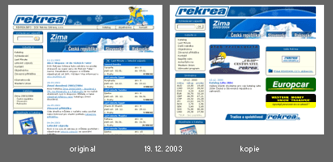

Zkopírovaný web DCK Rekrea Ostrava
Zkopírovaný design webu? Skoro bìžná vìc. Zkopírovat ale layout i se strukturou, funkènostmi a èásteènì i obsahem komerèního webu bez svolení autora — to už není jen amatérský pøístup k webdesignu, to už ohrožuje nejen autora webu samotného, ale i business klienta. Bohužel se to stalo v pøípadì firmy, se kterou dlouhodobì spolupracuji. Aby byl celý pøípad pochopitelný, založil jsem na svém již mrtvém blogu tuto stránku. Jestliže vám takovéto krádeže na webu nejsou šumafuk, budu rád, když na ni odkážete.
Dvì rùzné firmy, stejný web
Celorepubliková cestovka Rekrea se pøed pár lety rozdìlila na nìkolik nezávislých firem, které jsou dohodnuté na sdílení tradièního loga. Dvì z nich jsou tyto:
- DCK Rekra Ostrava, s.r.o. (originál)
http://www.ck-rekrea.cz/old/
mùj klient, v ukradené podobì na webu od roku 2001, nyní již po kompletním redesignu - DCK Rekrea Hradec Králové, s.r.o (kopie)
http://www.rekreahk.cz/
klient sdružení RP design, na webu jen krátce
Co je neoprávnìnì zkopírováno?
Všechno, co šlo. Grafický layout, architektura webu, funkènosti. Kopie pøidala pár obsahových stránek a funkcí na víc. Pøevzato není server-side skriptování (to nešlo, nicménì srovnejte názvy souborù) a HTML (to je pøepsané — naštìstí hùø než u originálu).
Screenshoty

Originál (ck-rekrea.cz) 19. 12. 2003
Kopie (rekreahk.cz) 19. 12. 2003
Kopie (rekreahk.cz) 8. 1. 2004
Reference firmy, která web zkopírovala (RP-design) 19. 12. 2003
{kind=link}
{kind=link}
{kind=link}
{kind=link}
Souèasný stav kopie (rekreahk.cz) je oproti pùvodnímu stavu mírnì pozmìnìn. Online verze originálu (ck-rekrea.cz) byla nezávisle na pøípadu neoprávnìného zkopírování poslední dva mìsíce redesignována a 7. 1. 2004 spuštìna s novým designem.
Story
Kopii webu jsem nalezl pøi kontrole umístìní webu klienta ve vyhledávaèi 19. 12. 2003. Okamžitì jsem se pokusil kontaktovat zástupce RP design, což je spoleènost hlásící se k autorství ukradeného webu. Podaøilo se mi to až následující pondìlí. Pan Roman Pokorák se pøekvapivì tváøil rozumnì a pøislíbil vstøícnost. Týden po tom byl mírnì ale neuspokojivì zmìnìn layout kopie. Po dalších dvou týdnech urgencí bez reakce zùstává kopie v mírnì zmìnìné podobì, která dále poškozuje mne i mého klienta. Pan Pokorák nekomunikuje. Tøeba bude komunikovat s nìkým jiným, mùžete to zkusit — rpdesign@rpdesign.cz.
Nezávisle na tomto politovánihodném pøípadu probíhal již døíve redesign originálu (ck-rekrea.cz). Nyní je na základì pøání klienta tedy originál spuštìn s jiným designem.
Proè je to špatnì?
Ptáte se, proè je to špatnì i pøes to, že souèasný web mého klienta je již redesignován?
- zamìnitelnost — návštìvník si myslí, že je v prostøedí, které zná, ale pøitom nakupuje u konkurence. V tomto pøípadì se jedná o dvì firmy, které vizuálnì komunikují velmi podobì, proto je zamìnitelnost prostøedí, ve kterém se návštìvník pohybuje pøímo fatální
Srovnejte napøíklad umístìní obou webù na vyhledavaèi Jyxo pøi zadání klíèového slova Rekrea (screenshot). Potenciální zákazník mùže na internetu hledat „tu Rekreu, kde si objednal minulou dovolenou”. Je to ve skuteènosti ostravská Rekrea (1. místo), ale zákazník napøíklad pùjde i na 2. místo (kopie — hradecká Rekrea) — a hle... nakoupí tam, protože to vypadá, tak jak si to pamatuje. - odebírání návštìvníkù — kopie má obsah velmi podobný, takže za jistých okolností mùže návštìvníky mému klientovi brát díky podobnému umístìní ve vyhledavaèích na stejná klíèová slova. Kopie prozatím není dobøe zaindexována vyhledavaèi, proto v tuto chvíli nelze usuzovat konkrétní dopady.
- etické a právní dùvody — i když jsou v prvním pøípadì velmi vzdušné a ve druhém pøípadì v souèasnosti tìžce vymahatelné, nelze na nì zapomínat
{kind=link}
Vìøím, že tento pøípad bude ponauèením pro další tvùrce webù, kteøí se takto nechávají „inspirovat” a že takové vìci v budoucnu solidní webdesignové firmy nebudou muset øešit pøíliš èasto.
Odkazy
- Ripoff fórum na Isolate.cz
- Pirates Sites — nejvìtší rip-off server
- Pixy.cz: Jak na zlodìje? Bombou
- Zákon è. 121/2000 Sb., o právu autorském, o právech souvisejících s právem autorským a o zmìnì nìkterých zákonù (autorský zákon)
- Interval.cz: Autor webu je chránìn
Máte názor? Kontaktujte autora: machal@creativity.cz
Roman Pokorák neoprávnìnì zkopíroval stránky DCK Rekrea Ostrava.
Více informací o Google bombì.
Poslední úprava: 18. 1. 2004.